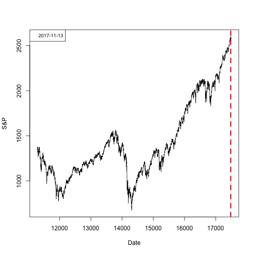
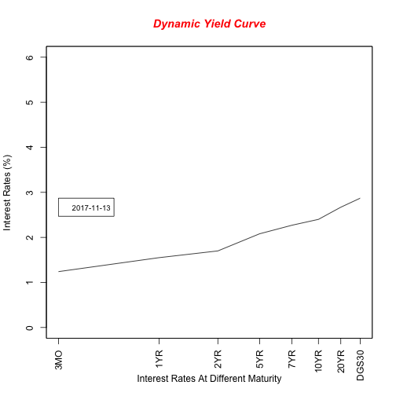

The Secret To Success combines Good Returns with Good Risk Management
What Good Are Good Returns If We Don't Know When To Exit?
"Stock valuations make sense in 2017 with interest rates where they are" - Warren Buffett
Horacio Ballinas
Developing Data Projects Course Project
The Secret To Success combines Good Returns with Good Risk Management
What Good Are Good Returns If We Don't Know When To Exit?
"Stock valuations make sense in 2017 with interest rates where they are" - Warren Buffett
The Dynamic Yield Curve app let you visualize how the interest rates at different maturity dates have behaved in the past (A graph showing these Interest Rates at different maturity dates is called the Yield Curve). You'll notice that right before every market crash, the yield curve inverts. The Yield Curve is the Best Predictor Known to Man that a Market Crash is Imminent.
First, we load the interest rates datasets from the FED and the S&P from Yahoo Finance...
## [1] "DGS3MO"
## [1] "DGS1"
## [1] "DGS2"
## [1] "DGS5"
## [1] "DGS7"
## [1] "DGS10"
## [1] "DGS20"
## [1] "DGS30"
## [1] "GSPC"
The app let's you visualize the market and yield curve at any date using a slider 
Please note that the yield curve is flattening in 2017. I recommend you monitor this graph closely and take action if the curve inverts.
